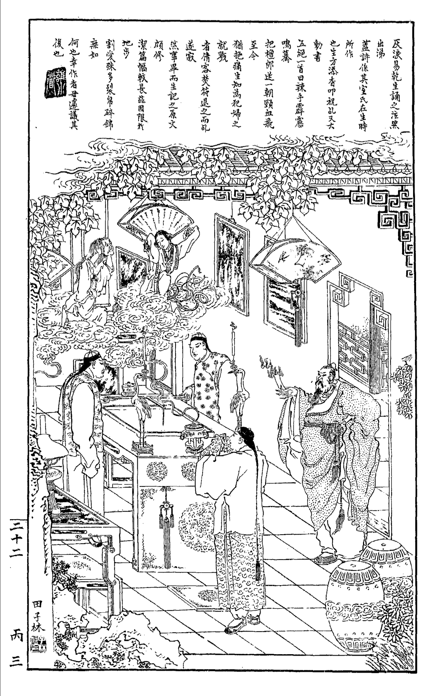

This DH project explores both the cultural and historicaldimensions of Chinese spirit-writing, a mediumistic practice used to produce texts that are ascribed to gods and spirits. Most commonly known today as Fuji (wielding the stylus) or Fuluan (cf. Pic 1, wielding the phoenix), this technique traditionally utilized human mediums wielding T- or Y-shaped wooden styluses over boxes filled with sand or ashes. By focusing on the history and the roles of specific actors, our platform maps the evolution of this divinatory practice and its enduring societal impact.

Pic 1. One page from the book Feiluan Xinyu, cf. Zeichen der Zukunft